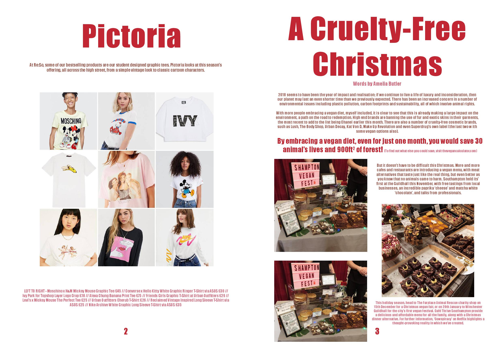
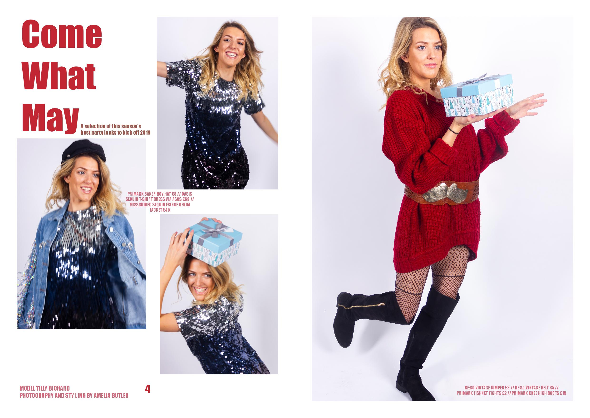
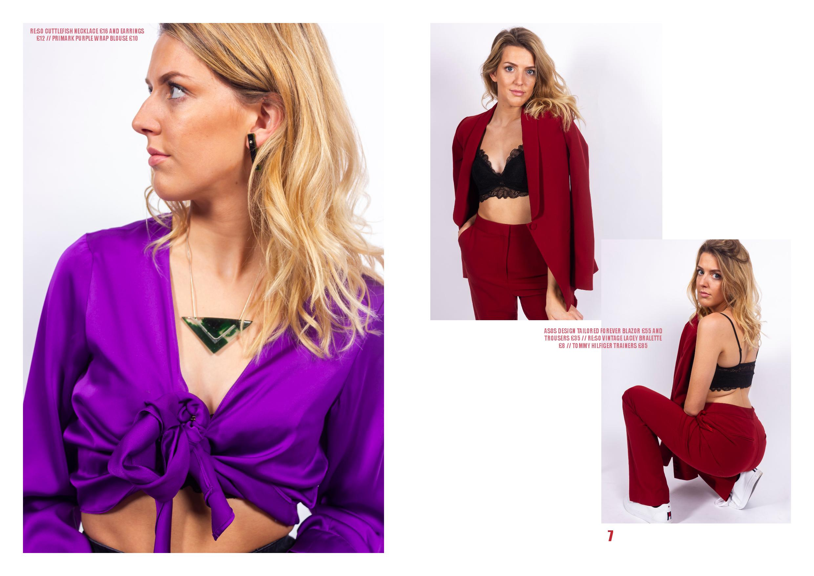

Fashion Media

Creating a magazine for Solent University’s student-led brand Re:So, producing photoshoots, articles and trend research based on the values of the brand.
I wanted the publication to reflect the excitement of Re:So, a brand run by students with products made by students or alumni of Solent University. The magazine has a playful feel and reflects the company’s branding through use of colour and content, appealing to the student audience.
The photoshoots feature a selection of models, both male and female, wearing clothes that can be purchased in Re:So. The trend report was written in relation to upcoming statement pieces, similar to those found in the store. Finally the article was written about something I value myself, giving the publication a more personal connection to my work.


